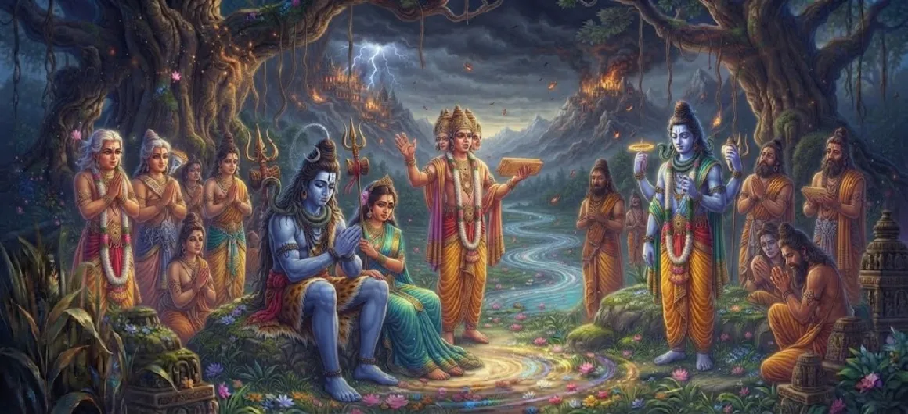

देवताओं की व्यथा
कुमार खण्ड का प्रारंभिक अध्याय दिव्य लोकों में होने वाली विनाशकारी स्थिति का परिचय देता है। देवता, जो कभी शक्तिशाली और प्रकाशमान थे, स्वयं को अत्यंत असहाय अवस्था में पाते हैं।
भय और अस्थिरता से प्रेरित, यह अध्याय दैवीय हस्तक्षेप के लिए मंच तैयार करता है जो ब्रह्मांड को नया आकार देगा।
अध्याय 1 की मुख्य बातें
दिव्य संकट
स्वर्ग में अराजकता की शुरुआत।
तारकासुर का आतंक
अत्यंत शक्तिशाली असुरराज का उदय।
संकट में भगवान
शक्ति और दैवीय स्थिति की हानि।
सहायता के लिए कॉल करें
परम रक्षक, शिव की तलाश।
टूटा हुआ संतुलन
ब्रह्मांडीय व्यवस्था का अंधकार में गिरना।
कार्रवाई की प्रस्तावना
दिव्य युद्ध की तैयारी।
इस अध्याय में मुख्य विषय
दिव्य उथल-पुथल की शुरुआत
आमतौर पर रोशनी और व्यवस्था से भरा रहने वाला स्वर्ग, अचानक असुर तारकासुर के अंधेरे प्रभाव के आगे झुक जाता है। देवता, जो ब्रह्मांड की लय को बनाए रखते हैं, महसूस करते हैं कि उनकी शक्ति तेजी से ख़त्म हो रही है।
ब्रह्मांडीय स्थिरता के इस नुकसान से देवताओं में तत्काल घबराहट पैदा हो जाती है।
तारकासुर का शासनकाल
तारकासुर तीव्र तपस्या के माध्यम से अपार शक्ति प्राप्त करके एक दुर्जेय शक्ति के रूप में उभरता है। उसकी महत्वाकांक्षा की कोई सीमा नहीं है क्योंकि वह तीनों लोकों को अपने अधिकार में करना चाहता है।
उसका अत्याचार एक अंधकार युग की शुरुआत का प्रतीक है।
देवताओं की गहरी असहायता
अपनी व्यक्तिगत शक्तियों के बावजूद, देवताओं को एहसास हुआ कि कोई भी तारकासुर के वरदान-सशक्त क्रोध के खिलाफ खड़ा नहीं हो सकता है। उनके हथियार अप्रभावी हो गए हैं, और उनके अथक हमले के तहत उनकी सुरक्षा ध्वस्त हो गई है।
वे स्वयं को अपने उचित क्षेत्र से निर्वासित पाते हैं।
शिव के हस्तक्षेप की तलाश में एकता
कोई अन्य रास्ता न मिलने पर, देवताओं ने आत्मा और उद्देश्य में एकजुट होकर, प्राकृतिक व्यवस्था को बहाल करने में सक्षम एकमात्र शक्ति की तलाश करने का निर्णय लिया: भगवान शिव, सर्वोच्च संहारक और उद्धारकर्ता।
उनका सामूहिक संकल्प ही उनकी मुक्ति का आधार बनता है।
ब्रह्मांडीय असंतुलन की अभिव्यक्ति
इस असंतुलन के भौतिक संकेत हर जगह हैं - तारे मंद पड़ जाते हैं, प्राकृतिक नियम लड़खड़ा जाते हैं, और देवताओं के क्षेत्र में छाया लंबी हो जाती है। ब्रह्मांड नवीनीकरण के संकेत की प्रतीक्षा कर रहा है।
अँधेरा अस्तित्व के हर कोने पर कब्ज़ा कर लेता है।
भविष्य के लिए आशा की एक किरण
अपनी दुर्दशा के सबसे अंधेरे क्षण में भी, देवता इस विश्वास पर कायम हैं कि धार्मिकता की जीत होगी। यह विश्वास सहायता की उनकी तलाश में मार्गदर्शक बन जाता है।
शिव की ओर उनकी यात्रा ईमानदारी से शुरू होती है।
अध्याय 2 की ओर तारकासुर का अत्याचार
अध्याय 1 में स्वर्ग की भयानक स्थिति स्थापित करने के बाद, कथा उन विशिष्ट तरीकों का विवरण देने के लिए आगे बढ़ती है जिनमें तारकासुर अपने अत्याचार लागू करता है।
अगला अध्याय उसके अत्याचार की गहराई को उजागर करेगा।
अध्याय 1 की मुख्य शिक्षाएँ
परिवर्तन की अनिवार्यता
जब धर्म का ह्रास होता है तो व्यवस्था अराजकता का मार्ग प्रशस्त करती है।
महत्वाकांक्षा के खतरे
अनियंत्रित शक्ति अत्याचार को जन्म देती है।
एकता की शक्ति
देवताओं को सामूहिक कार्रवाई से शक्ति मिलती है।
परमात्मा की ओर मुड़ना
शिव सभी कष्टों के आश्रय हैं।
स्थायी विश्वास
संकट में भी आशा कायम रहती है।
कथा का उद्घाटन
दिव्य नाटक के लिए मंच तैयार करना।
आध्यात्मिक चिंतन
देवताओं का संकट हमारी असहायता के मानवीय अनुभवों को दर्शाता है। जब हम अपने नियंत्रण से परे शक्तियों से अभिभूत महसूस करते हैं, तो दिव्य स्रोत - शिव - की ओर मुड़ना याद रखना हमारे आध्यात्मिक संतुलन को पुनः प्राप्त करने और शांति पाने की दिशा में पहला कदम है।
अध्याय 1 का संदेश जीना
संकट के क्षणों में, स्वयं को अलग-थलग करने के बजाय साथी साधकों के साथ एकता विकसित करें।
यह पहचानने की स्पष्टता विकसित करें कि बाहरी परिस्थितियों में आध्यात्मिक हस्तक्षेप की आवश्यकता कब होती है।
विश्वास बनाए रखें कि सबसे अंधकारमय समय में भी, दिव्य उपस्थिति पहुंच के भीतर रहती है।
प्रमुख आध्यात्मिक अवधारणाएँ
दिव्य प्राणियों के सामने आया संकट या गंभीर संकट की स्थिति।
ब्रह्मांडीय व्यवस्था को खतरे में डालने वाली राक्षसी शक्तियों का उदय और प्रभुत्व।
दुर्गम बाधाओं को दूर करने के लिए भगवान शिव की पूर्ण शरण लेना।
धार्मिकता और ब्रह्मांडीय कानून का ह्रास या कमजोर होना।
ब्रह्मांड में संतुलन बहाल करने का दिव्य सामूहिक संकल्प।
नवीनीकरण की ओर ले जाने वाला समय का अपरिहार्य मोड़।
अध्याय सारांश
कुमार खण्ड अध्याय 1 में तारकासुर के कारण हुई दिव्य उथल-पुथल का परिचय दिया गया है, जिसमें देवताओं की असहायता और शिव के हस्तक्षेप की मांग करने के उनके सामूहिक निर्णय को दर्शाया गया है, जो महाकाव्य दिव्य संघर्ष के लिए मंच तैयार करता है।
अक्सर पूछे जाने वाले प्रश्न
1. कुमार खण्ड अध्याय 1 का मुख्य विषय क्या है?
अध्याय 1 राक्षस तारकासुर के आतंक के कारण देवताओं के गंभीर संकट और पीड़ा का वर्णन करके कुमार खण्ड का परिचय देता है।
2. इस अध्याय में प्राथमिक प्रतिपक्षी कौन है?
मुख्य प्रतिपक्षी राक्षस राजा तारकासुर है, जिसकी अनियंत्रित शक्ति ने दिव्य व्यवस्था को अराजकता में डाल दिया है।
3. देवताओं का संकट क्यों महत्वपूर्ण है?
देवताओं की परेशानी कुमार (कार्तिकेय) के दिव्य अवतार के लिए उत्प्रेरक के रूप में कार्य करती है, जिसे संतुलन बहाल करने और तारकासुर को हराने के लिए नियत किया गया है।
4. अध्याय 1 के बाद अगला अध्याय कौन सा है?
अगले अध्याय का शीर्षक 'तारकासुर का अत्याचार' है।
"जब अंधकार स्वर्ग की पवित्रता को खतरे में डालता है, तो धर्मी लोगों की सामूहिक अपील परमात्मा के कानों तक पहुँचती है, एक नए उद्धारकर्ता के उदय का आह्वान करती है।"
कुमार खण्डा के माध्यम से जारी रखें
अध्याय 1 दिव्य संकट की स्थापना करता है। अगले अध्याय, तारकासुर का अत्याचार, को जारी रखें।